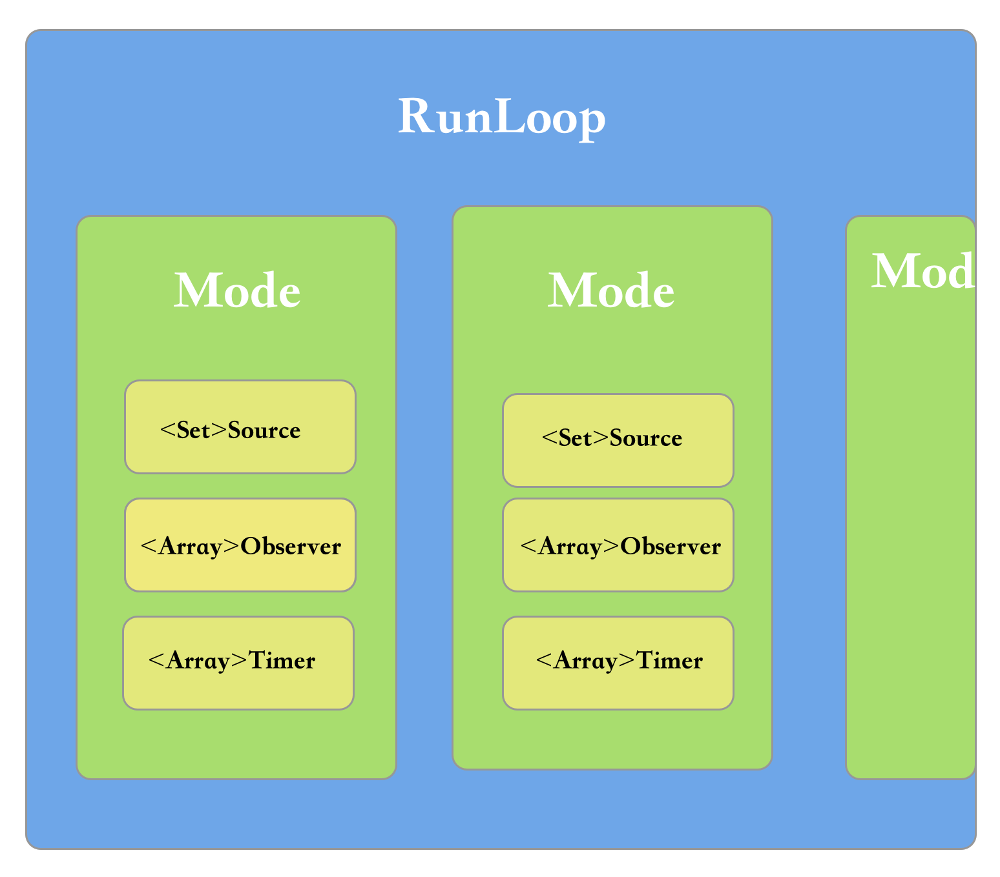

Fundation 框架是对Core Fundation的封装。
Fundation
[NSRunLoop currentRunLoop];//返回当前线程的RunLoop 如果不存在就会创建一个RunLoop并返回。
//If a run loop does not yet exist for the thread, one is created and returned.
[NSRunLoop mainRunLoop]//获取主线程的RunLoop对象。
基础知识:每个线程上都对应有一个RunLoop对象，主线程RunLoop默认开启，子线程RunLoop要手动开启。
RunLoop在线程结束的时候退出循环。
Core Fundation
CFRunLoopGetCurrent()//
获取当前线程的RunLoop对象
CFRunloopGetMain()//获取主线程的RunLoop对象
CFRunLoopModeRef

每个 RunLoop其实都是一个对象，可以包含多个不同的mode，每个mode又由source、observer、 timer组成，而且mode中source 、observer、timer都不存在的话，这个RunLoop也不存在。
系统默认注册了5个mode
kCFRunLoopDeafultMode:App的默认mode。通常主线程是在这个mode下运行。
UITrakingRunLoopMode:界面跟踪mode 用于scrollview追踪触摸滑动，保证界面滑动时不受其他mode的影响。
UIInitalizeationRunloopMode:在刚启动app时进入的第一个mode 启动完成后就不再使用。
GSEventReceiveRunLoopMode:接受系统时间的内部mode 通常用不到
kCFRunLoopCommonModes:这是一个占位用的mode 不是一种真正的mode
CFRunLoopSourceRef
事件源（输入源）
source0 非基于port的
- custom input sources
- cocoa perform selector sources
source1 基于port的
CFRunLoopTimerRef
基于时间的触发器
基本上说的就是NSTimer
默认加到kCFRunLoopDeafultMode 但是滑动的时候定时器所在的mode会暂停，所以应该把定时器加到kCFRunLoopCommonModes中去。
//创建定时器并开启定时任务
+ (NSTimer *)scheduledTimerWithTimeInterval:(NSTimeInterval)ti target:(id)aTarget selector:(SEL)aSelector userInfo:(nullable id)userInfo repeats:(BOOL)yesOrNo;
//创建定时器但不开启定时任务
+ (NSTimer *)timerWithTimeInterval:(NSTimeInterval)ti target:(id)aTarget selector:(SEL)aSelector userInfo:(nullable id)userInfo repeats:(BOOL)yesOrNo;
NSTimer中scheduledTimerWithTimeInterval方法创建的默认加到kCFRunLoopDeafultMode并开启，但是其他方法创建的定时器并没有开启，要去手动开启，或者直接指定一个mode，那么就会开启执行定时器任务。
CFRunLoopObserverRef
观察者，能够监听runloop的状态改变。
可以监听的时间点有以下几个。
/* Run Loop Observer Activities */
typedef CF_OPTIONS(CFOptionFlags, CFRunLoopActivity) {
kCFRunLoopEntry = (1UL << 0),即将进入runloop
kCFRunLoopBeforeTimers = (1UL << 1),即将处理timer
kCFRunLoopBeforeSources = (1UL << 2),即将处理source
kCFRunLoopBeforeWaiting = (1UL << 5),即将进入休眠
kCFRunLoopAfterWaiting = (1UL << 6),刚从休眠中唤醒
kCFRunLoopExit = (1UL << 7),即将退出runloop
kCFRunLoopAllActivities = 0x0FFFFFFFU监听runloop所有的情况
};
//添加runloop状态的监听
-(void)addobserver{
CFRunLoopObserverRef observe = CFRunLoopObserverCreateWithHandler(CFAllocatorGetDefault(), kCFRunLoopAllActivities, YES, 0, ^(CFRunLoopObserverRef observer, CFRunLoopActivity activity) {
NSLog(@"%lu",activity);
});
CFRunLoopAddObserver(CFRunLoopGetCurrent(), observe, kCFRunLoopDefaultMode);
}
CFRelease(observe);//记得要释放c中的对象
实战场景
Q:当滑动的时候对imageview设置图片并不会显示。
A:所以可以使设置image的操作在commonmode中执行。
比如使用方法
UIImageView * imageView = [[UIImageView alloc]init];
[imageView performSelector:@selector(setImage:) withObject:[UIImage imageNamed:@"logo"] afterDelay:3 inModes:@[NSRunLoopCommonModes]];
Q:当滑动的时候Timer的定时任务不会执行。
A:把Timer放到commonmode中执行。
比如使用方法
NSTimer * timer = [NSTimer scheduledTimerWithTimeInterval:2 repeats:YES block:^(NSTimer * _Nonnull timer) {
}];
[[NSRunLoop currentRunLoop] addTimer:timer forMode:NSRunLoopCommonModes];
创建子线程并执行事件，任务做完之后线程就销毁了。
-(void)creatThread{
NSThread * thread = [[NSThread alloc]initWithTarget:self selector:@selector(testThread) object:nil];
[thread start];
}
-(void)testThread{
NSLog(@"%@",[NSThread currentThread]);
}
Q:如果想要让这个线程常驻的话应该怎么操作呢
A:创建一个带有mode的runloop并开启，runloop如果不指定mode的话就不能开启循环。
比如使用方法
-(void)creatThread{
NSThread * thread = [[NSThread alloc]initWithTarget:self selector:@selector(testThread) object:nil];
[thread start];
}
-(void)testThread{
NSLog(@"%@",[NSThread currentThread]);
[[NSRunLoop currentRunLoop] addPort:[NSPort port] forMode:NSRunLoopCommonModes];
[[NSRunLoop currentRunLoop] run];
//这个代码不会往下执行，所以这个任务不会结束。
}
Q:如果子线程加一个定时器任务，定时器任务不执行
A:在主线程开启的定时器默认开启了runloop，但是子线程开启的定时器没有runloop需要手动开启。
-(void)creatThread{
self.thread = [[NSThread alloc]initWithTarget:self selector:@selector(testTimer) object:nil];
[_thread start];
}
//修改前
-(void)testTimer{
[NSTimer scheduledTimerWithTimeInterval:2 repeats:YES block:^(NSTimer * _Nonnull timer) {
//code
}];
}
//修改后
-(void)testTimer{
[NSTimer scheduledTimerWithTimeInterval:2 repeats:YES block:^(NSTimer * _Nonnull timer) {
//code
}];
1.[[NSRunLoop currentRunLoop] addPort:[NSPort port] forMode:NSRunLoopCommonModes];
//还可以使用下面这个方法，但是注意到如果是使用的schedue创建的方法默认是把timer加到runloop的只需要把当前的runloop run就可以了不需要再加1和2的方法，但是其他创建timer的方法没有默认把timer加到runloop就必须使用下面的这个方法把timer加到runloop当中。
2.[[NSRunLoop currentRunLoop] addTimer:timer forMode:NSRunLoopCommonModes];
//必须的方法，因为子线程创建的runloop需要手动开启。
[[NSRunLoop currentRunLoop] run];
}
没有开启runloop线程被销毁了，定时器也没有被加到runloop执行，所以解决办法就是把定时器加到runloop当中的mode中并执行run方法。
自动释放池
//当runloop在休眠之前会释放自动释放池，当runloop再启动时就会再创建池子
@autoreleasepool {
[NSTimer scheduledTimerWithTimeInterval:2 repeats:YES block:^(NSTimer * _Nonnull timer) {
//code
}];
[[NSRunLoop currentRunLoop] addPort:[NSPort port] forMode:NSRunLoopCommonModes];
[[NSRunLoop currentRunLoop] run];
}
runloop休眠的时候自动释放池销毁，在启动的时候再次生成自动释放池。